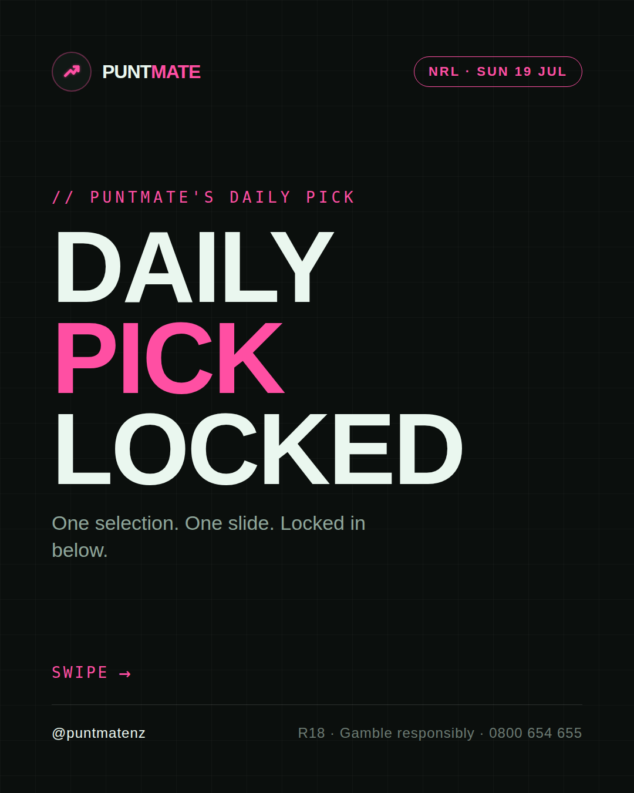
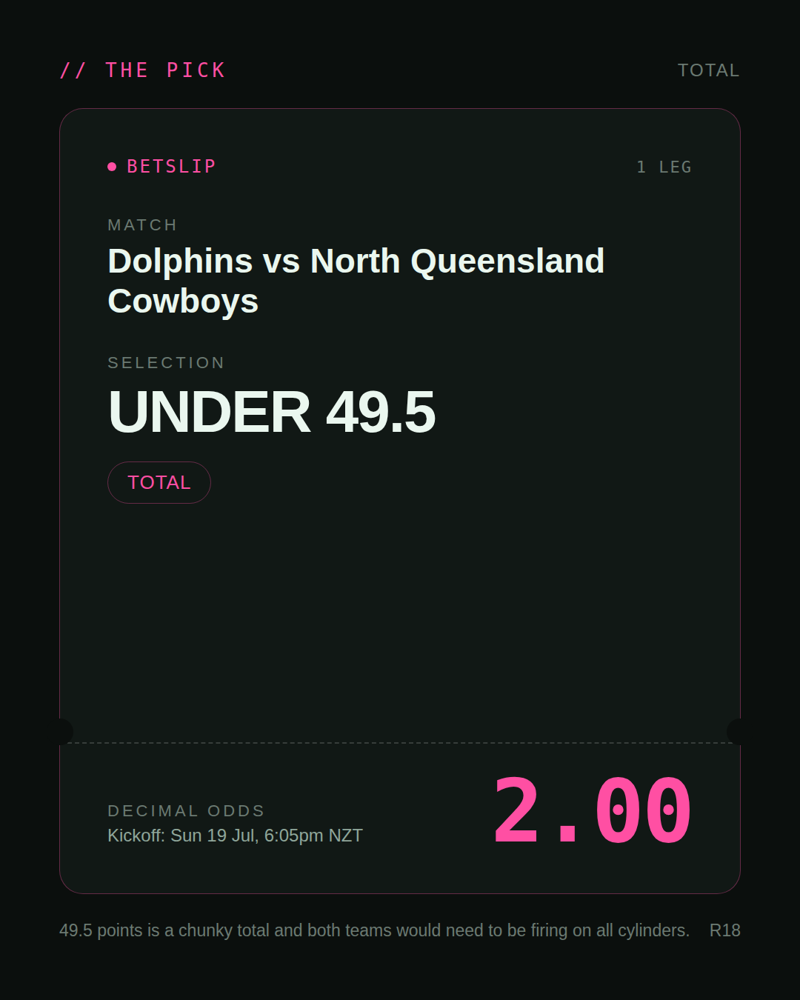
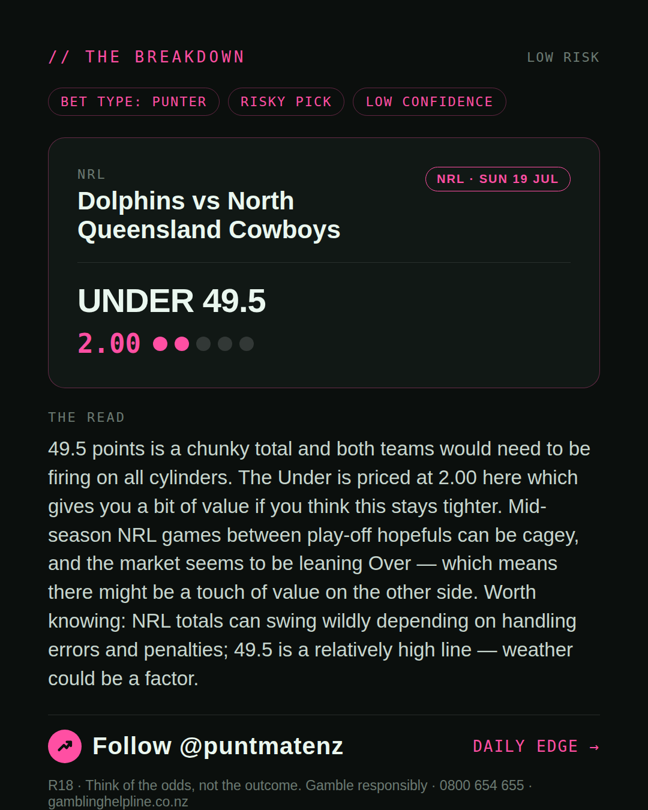
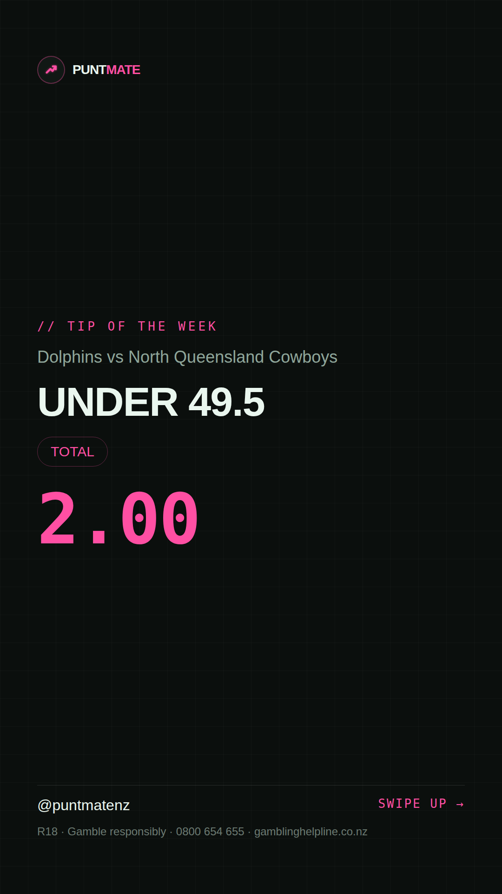

*🎯 PUNTMATE NZ — NRL* 🏟 Dolphins vs North Queensland Cowboys *PICK:* UNDER 49.5 *ODDS:* 2.00 (Total) *BET TYPE: PUNTER* _49.5 points is a chunky total and both teams would need to be firing on all cylinders. The Under is priced at 2.00 here which gives you a bit of value if you think this stays tighter. Mid-season NRL games between play-off hopefuls can be cagey, and the market seems to be leaning Over — which means there might be a touch of value on the other side. Worth knowing: NRL totals can swing wildly depending on handling errors and penalties; 49.5 is a relatively high line — weather could be a factor._ ────────────────── 📲 Join Telegram for daily picks R18 · Gamble responsibly · Problem Gambling Foundation NZ: 0800 664 262
🎯 NRL — Dolphins vs North Queensland Cowboys UNDER 49.5 @ 2.00 (Total) BET TYPE: PUNTER Solid touch here. Not a lock, but the value's real and the form backs it up. 49.5 points is a chunky total and both teams would need to be firing on all cylinders. The Under is priced at 2.00 here which gives you a bit of value if you think this stays tighter. Mid-season NRL games between play-off hopefuls can be cagey, and the market seems to be leaning Over — which means there might be a touch of value on the other side. Follow for daily value picks → @puntmatenz Problem Gambling Foundation NZ: 0800 664 262 #PuntmateNZ #SportsBetting #NZTAB #NRL
| has_pick | True |
| pick_id | 2026-07-18_Dolphins_vs_North_Queensland_Cowboys |
| run_id | 29663660790 |
| generated_at | 2026-07-18T22:36:46.345368+00:00 |
| post_date | 2026-07-18 |
| match | Dolphins vs North Queensland Cowboys |
| sport | rugbyleague_nrl |
| sport_label | NRL |
| market | Total |
| selection | UNDER 49.5 |
| odds | 2.00 |
| bet_type | PUNTER_BET |
| bet_type_label | BET TYPE: PUNTER |
| bet_type_reason | Solid touch here. Not a lock, but the value's real and the form backs it up. 49.5 points is a chunky total and both teams would need to be firing on all cylinders. The Under is priced at 2.00 here which gives you a bit of value if you think this stays tighter. Mid-season NRL games between play-off hopefuls can be cagey, and the market seems to be leaning Over — which means there might be a touch of value on the other side. |
| classification | RISKY_PICK |
| risk | RISKY_PICK |
| confidence | LOW |
| confidence_label | LOW |
| final_explanation | 49.5 points is a chunky total and both teams would need to be firing on all cylinders. The Under is priced at 2.00 here which gives you a bit of value if you think this stays tighter. Mid-season NRL games between play-off hopefuls can be cagey, and the market seems to be leaning Over — which means there might be a touch of value on the other side. Worth knowing: NRL totals can swing wildly depending on handling errors and penalties; 49.5 is a relatively high line — weather could be a factor. |
| public_caution | Keep this one light — the value's there but so is the uncertainty. |
| theme | night |
| carousel_paths | ['data/review/2026-07-18_Dolphins_vs_North_Queensland_Cowboys/cover.png', 'data/review/2026-07-18_Dolphins_vs_North_Queensland_Cowboys/tip.png', 'data/review/2026-07-18_Dolphins_vs_North_Queensland_Cowboys/breakdown.png'] |
| carousel_urls | ['https://raw.githubusercontent.com/kingofthecastle24/puntmate/main/data/cards/2026-07-18_Dolphins_vs_North_Queensland_Cowboys_night_1_cover.png', 'https://raw.githubusercontent.com/kingofthecastle24/puntmate/main/data/cards/2026-07-18_Dolphins_vs_North_Queensland_Cowboys_night_2_tip.png', 'https://raw.githubusercontent.com/kingofthecastle24/puntmate/main/data/cards/2026-07-18_Dolphins_vs_North_Queensland_Cowboys_night_3_breakdown.png'] |
| story_path | data/review/2026-07-18_Dolphins_vs_North_Queensland_Cowboys/story.png |
| story_url | https://raw.githubusercontent.com/kingofthecastle24/puntmate/main/data/cards/2026-07-18_Dolphins_vs_North_Queensland_Cowboys_night_story.png |
| intended_platforms | ['telegram', 'instagram_feed', 'instagram_story', 'facebook'] |
| workflow_state | GENERATED |